Promise, then release.
A loader earns its time only when it establishes the visual rule or protects a necessary 3D setup. Long logo-only waits are a warning, not a reference to imitate.
Alan Tai · editorial research · reconstructed 2026.08.11
A personal website should borrow the judgment of a magazine—not merely its furniture.
NYT Magazine, Coverjunkie, and Eye establish the cover rule: one governing idea survives at thumbnail size; the issue system supplies continuity.

Type can become the image, crop, collide, or carry the whole concept. The useful commonality is decisive hierarchy—not a shared style.
The official section could not be captured. Design-press interviews and retrospectives preserve the core lesson: choose the visual method after the editorial proposition.


A stable logo and issue frame make room for radically different cover concepts.

The archive makes continuity visible without forcing the same composition on every issue.
The Gentlewoman and POPEYE prevent a false choice between minimalism and information. A publication needs both speeds.

Image mass, white field, one display word, and quiet credits. Restraint works because the subject carries the page.

The cover labels the subject and gets out of the way. Confidence replaces cover-line clutter.

Illustration, masthead, multiple languages, issue data, and a direct theme coexist because their order is unambiguous.

Numbers, prices, dates, ranks, and buttons do not dilute the publication when the grid and typography stay disciplined.

Readers should recognize the topic, issue, and invitation immediately. Condensed display energy is useful when it serves that task.

The transferable principle is pace and legibility—not faux-aged paper or schoolhouse nostalgia.
Stripe Press makes the object's material evidence readable. The current site needs the same agreement between pose, edge, thickness, shadow, and motion.

Spines, edges, scale, and weight establish a collection before interaction begins. The equivalent resting pose for this site must show more than a rotated cover plane.
mymind and Jim Bang show two compatible digital lessons: type can act like cover art, and metadata can make a portfolio readable without explanatory prose.

Borrow the confidence of the headline and the brevity of the promise. Do not borrow the gradient or product-UI styling.

Numbered rows, tiny dates, restrained labels, and almost no onboarding copy make the information architecture visible.
Craftwork, Recent, Landing Love, Okay Dev, Showreel, and Awwwards were used as discovery surfaces. Their grids are evidence about browsing; the conclusions below come from opening the work itself.
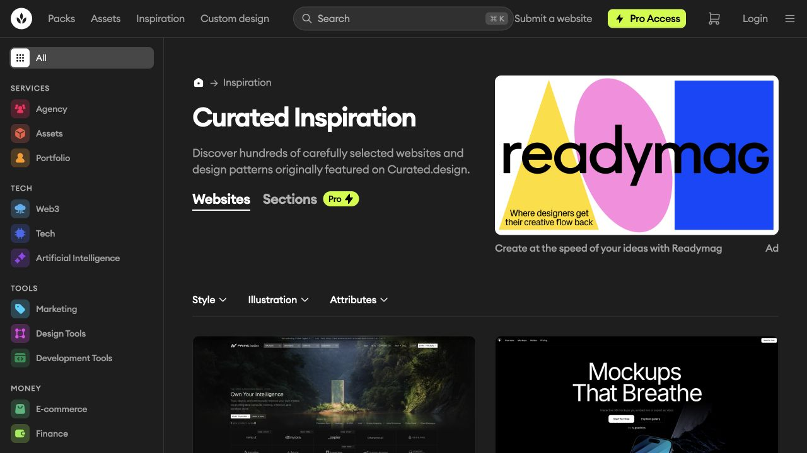
Dense filtering and calm cards make it useful for selection, but the grid itself is mostly static. It led to Prime Intellect and MCKP.
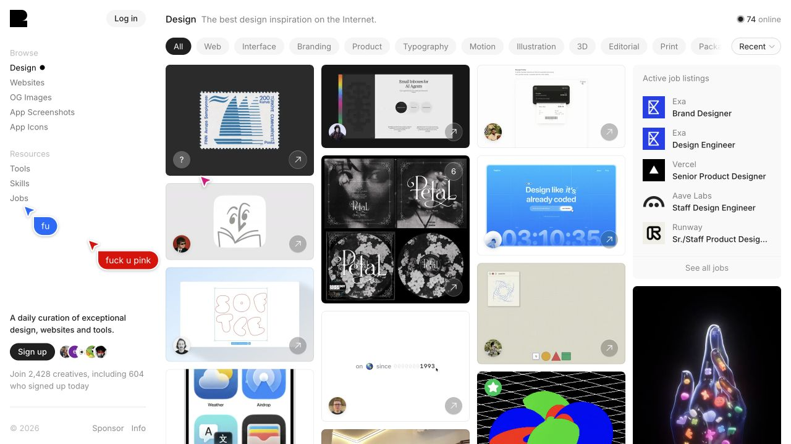
Short loops begin in place, so behavior is part of the artifact before a click. Useful for interaction primitives, not whole-site judgment.
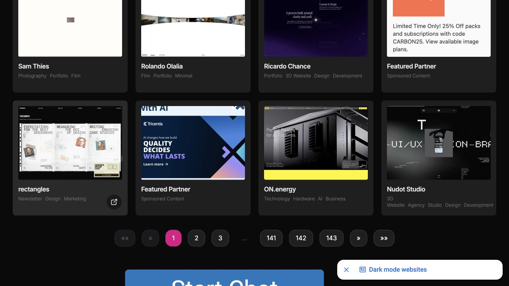
Full-page recordings answer a better question than a screenshot: what does the page feel like across time?
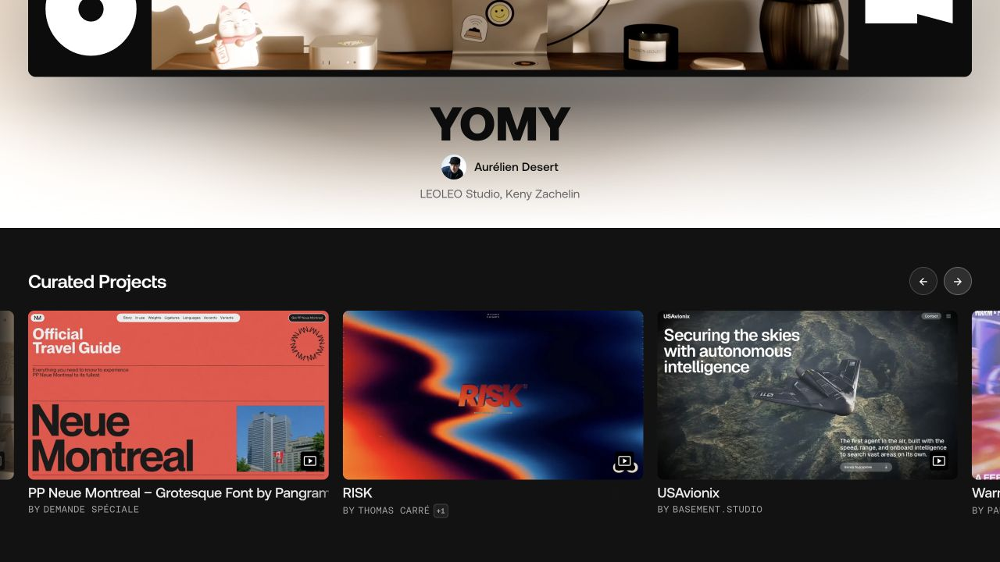
A small editorial pick sits above the community stream. The slider suggests judgment and order instead of endless equivalence.
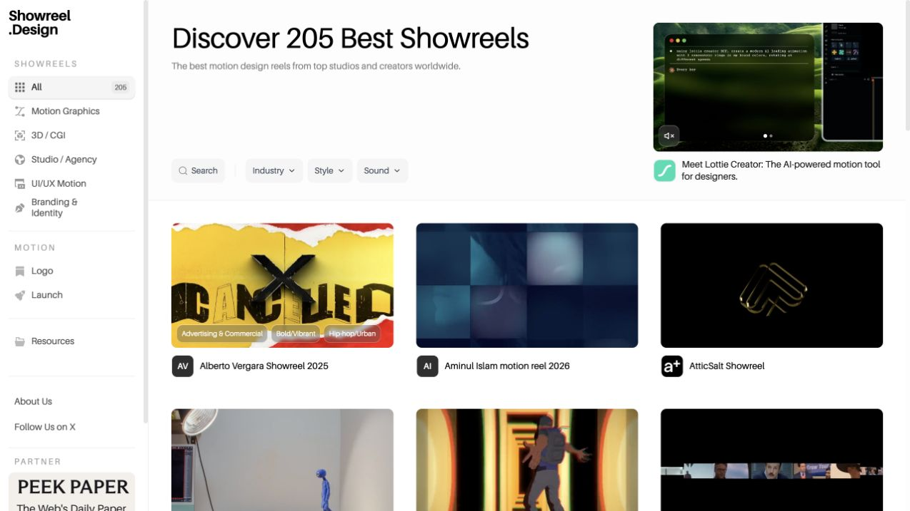
Ten-second previews, optional sound, and immediate playback make tempo, cut density, and visual energy filterable.
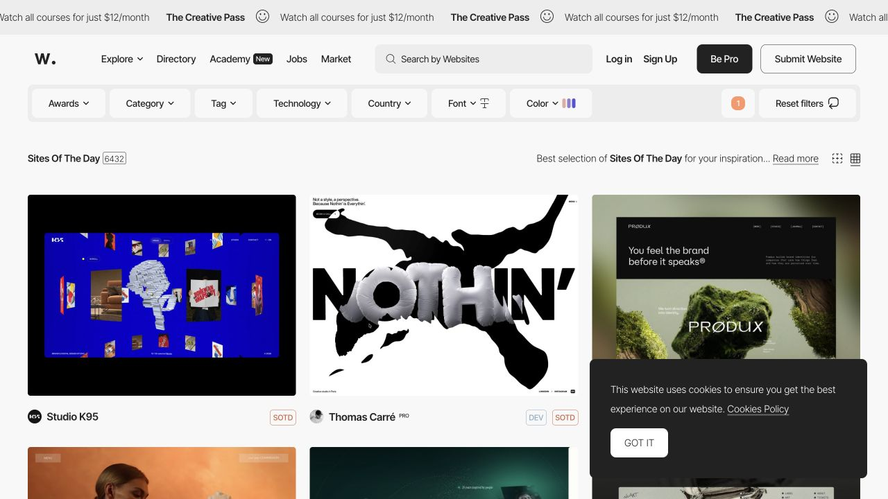
The index is comparatively still. Its value is the trail into current winners and element-level motion records.
Research correction: the archive does not treat aggregate screenshots as proof of a design pattern. Each live-site note names the behavior observed after following the feature to its source.
These are the actual featured sites, observed at entry and after interaction. The lesson is not “add animation”; it is that motion assigns weight, sequence, and physical character.
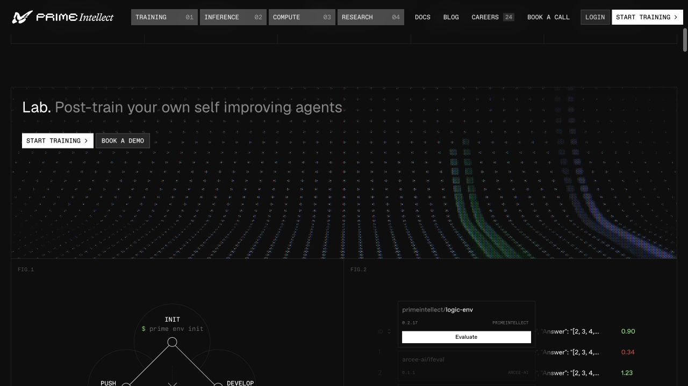
Persistent numbered navigation, figure labels, hairline grids, and live product diagrams make the page read like a lab report. Scroll changes the evidence, not the basic grammar.
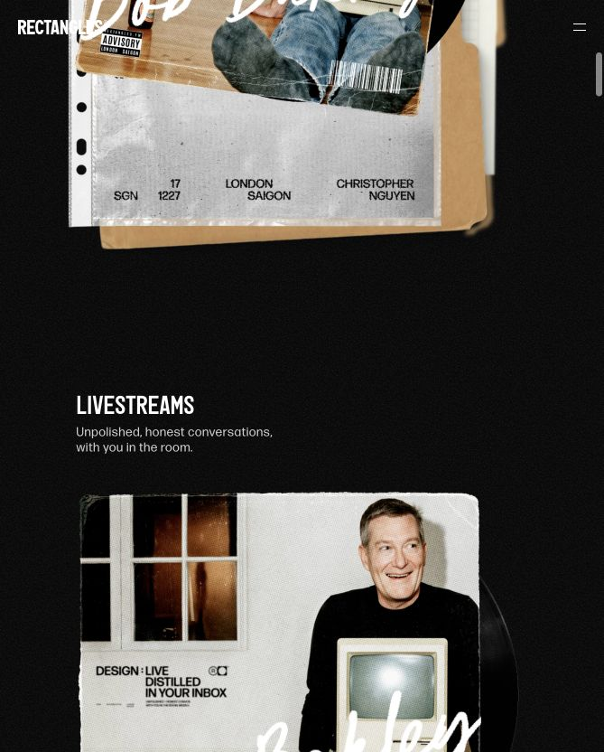
A fixed masthead sits over torn-paper imagery. Scrolling feels like moving down a constructed poster: hero, object, then chapter title and story image.
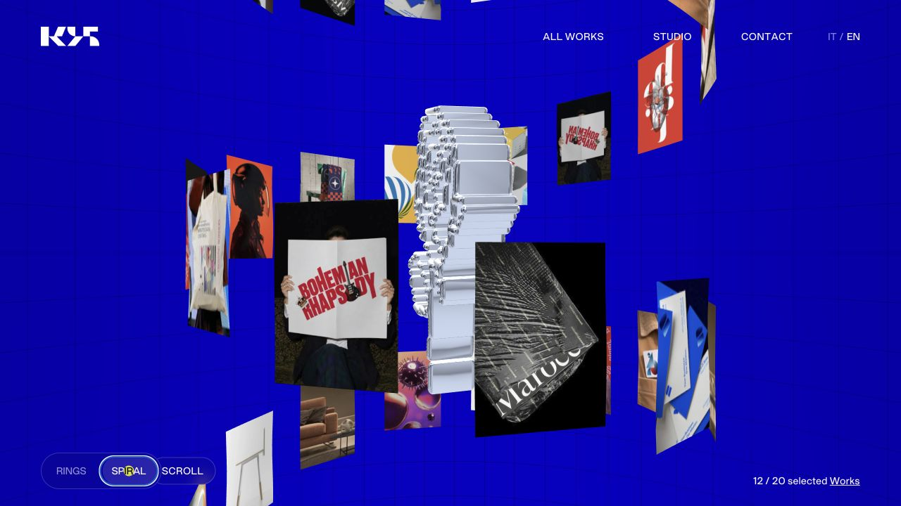
The same project set morphs between Rings and Spiral. Depth and camera arrangement are navigational states, not ornamental particles.
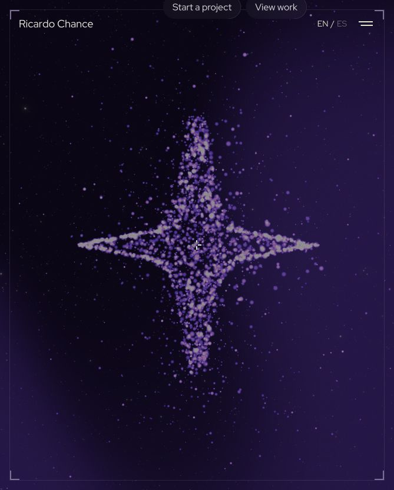
The WebGL field starts as quiet space, then gathers into a form around movement. It gives the pointer consequence before presenting work.
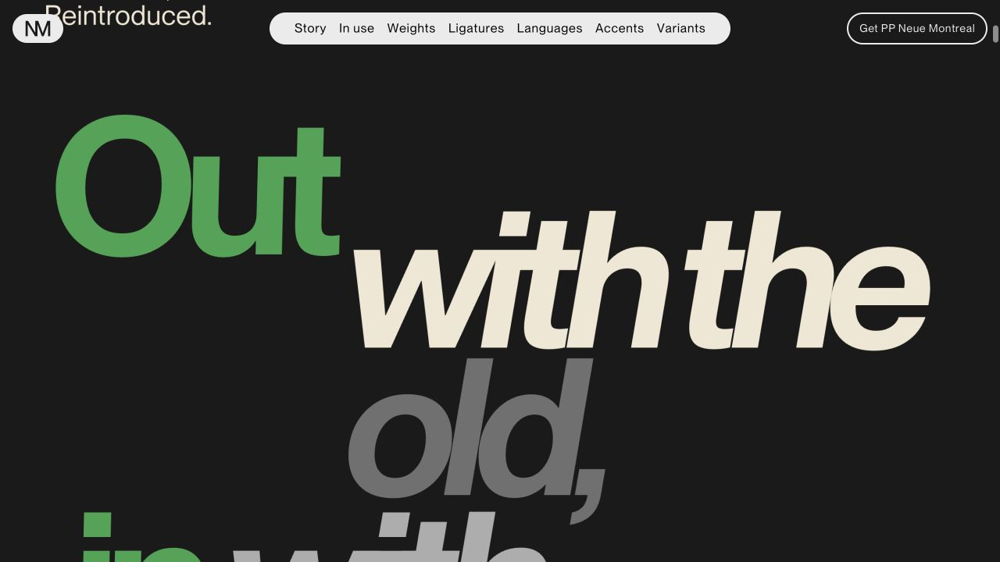
A type family is staged as an “official travel guide.” Oversized phrases, a sticky chapter rail, and changing weights turn scrolling into editorial sampling.
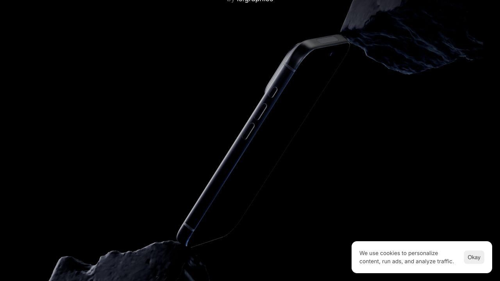
The product is demonstrated through a live 3D object. Enter, breathe, loop, follow, zoom, shake, and dolly are treated as different verbs with different causes.
The local clips below are research copies of previews exposed by the cited galleries. They are not production assets. Play, pause, and compare their timing—not their surface styling.
Useful for judging the whole sequence: entry, chapter cadence, pauses, and how often the composition genuinely changes.
Type scale, pinning, and spatial cuts do the narrative work. The page avoids animating every label independently.
A tiny behavior with a clear cause: chrome leaves when reading begins and returns when direction changes.
The transition can be scrubbed mid-flight. Input and output remain visibly connected.
A ten-second reel demonstrates how fast motion can be legible when each beat has a decisive silhouette.
A loader earns its time only when it establishes the visual rule or protects a necessary 3D setup. Long logo-only waits are a warning, not a reference to imitate.
Use pinning, masking, or density changes to mark editorial sections. Constant parallax produces activity without hierarchy.
Hover should expose the next state—play a sample, lift an object, reveal a caption—without stealing the page from the reader.
Cursor effects work when they alter an object, camera, or readable state. A decorative follower alone is weak evidence of interaction.
The best morphs show where an object came from and where it went. Page turns, FLIP-like rearrangements, and scrubbed minimization all keep that causal thread.
UI response stays quick; type reveals are measured; the publication object moves with weight; feature moments are rare enough to remain memorable.
Captured from the single “Design Inspiration” Smart Space the user supplied in Edge. These composites may contain saved third-party work and remain private research material; they must not be published.
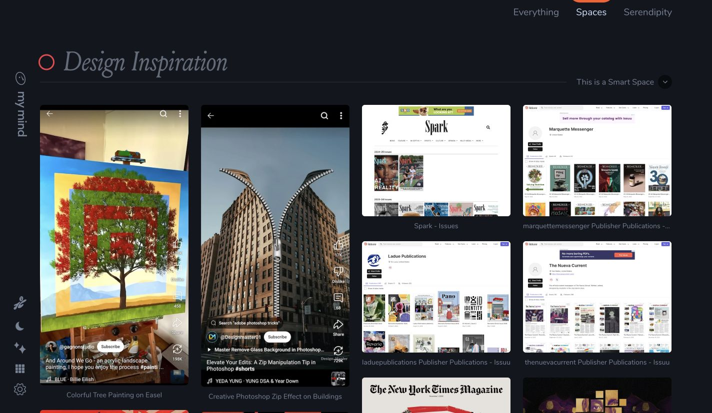
It joins school publications, issue archives, Photoshop/collage ideas, NYT Magazine covers, and experimental imagery. The common thread is authored hierarchy, not a single look.
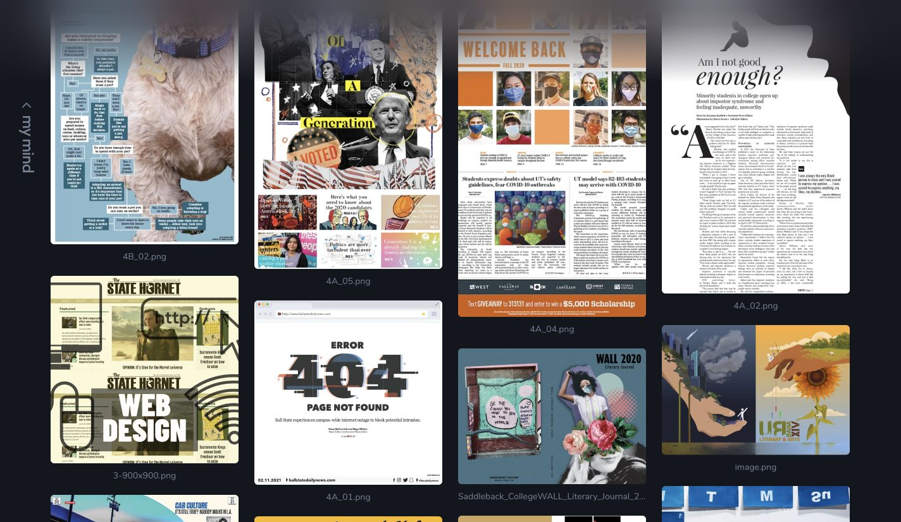
Interview maps, political collage, photo-led news grids, large pull quotes, and literary covers show that a magazine identity needs several compositional gears.
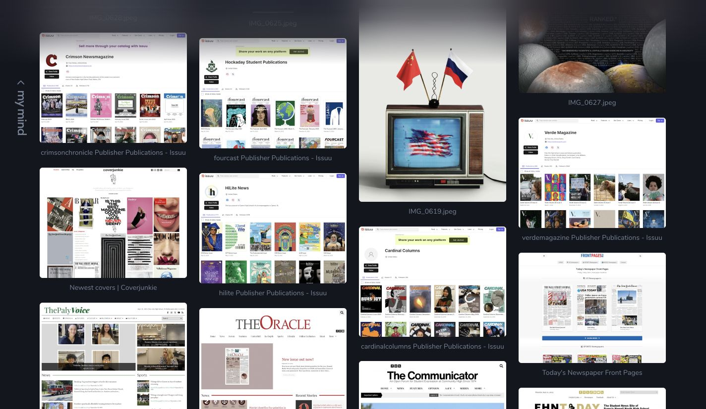
The saved Issuu profiles and news sites emphasize chronology, issue covers, section identity, and the pleasure of seeing many editions together.
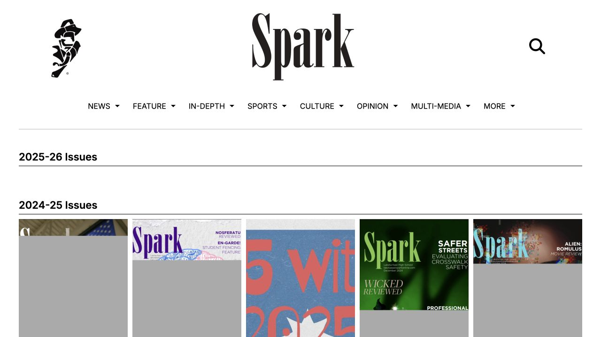
The live archive groups years and preserves covers as objects. A personal site can similarly foreground editions and eras instead of flattening everything into “recent work.”
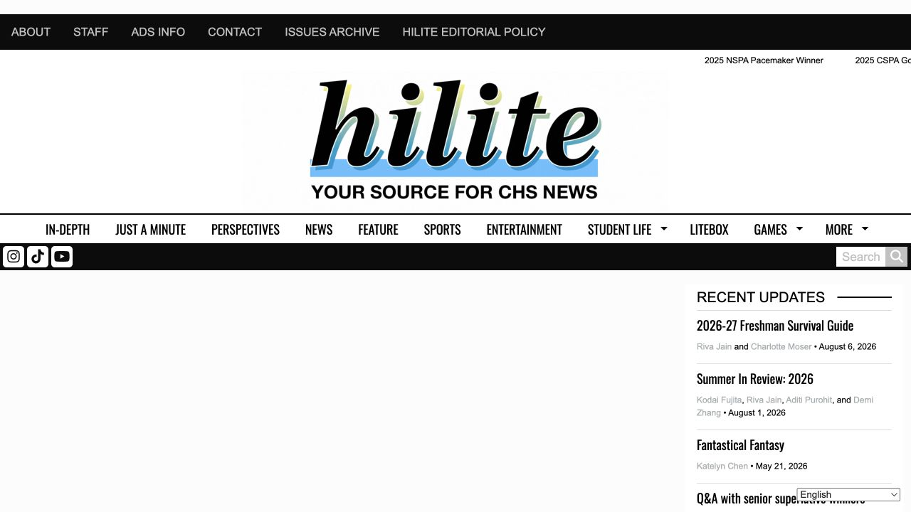
A breaking-news rail, section bands, lead package, author lines, and supporting cards make a busy page scannable without pretending every story is equal.
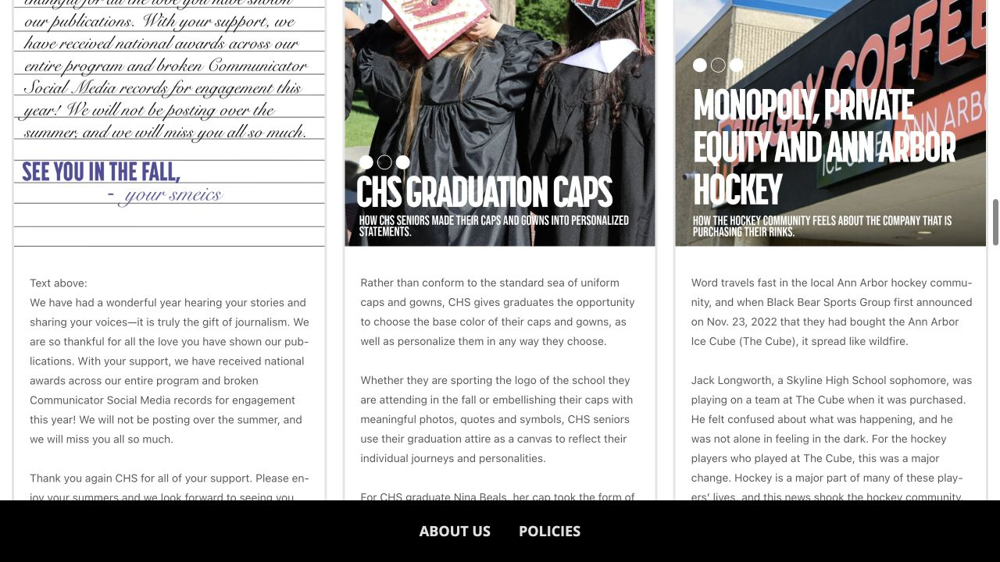
Photo of the day, trending, top stories, recent stories, and a print flipbook create several entry speeds while keeping the masthead stable.
A reference only helps when it has a defined job. These mappings prevent the moodboard from becoming an aesthetic soup.
| Cover | NYT Magazine + Coverjunkie + Eye: one concept, stable issue identity, minimal subordinate lines. |
|---|---|
| Contents / library | POPEYE + Eye + Jim Bang: deliberate density, strong numbering, visible metadata, exact scan order. |
| Letter / profile | The Gentlewoman: real photography, asymmetry across the gutter, quiet captioning, earned white space. |
| Projects / resume | Scholastic + POPEYE + Jim Bang: direct section hierarchy, evidence-led rows, clear dates, minimal explanation. |
| Book pose | Stripe Press: readable spine, edge, thickness, coherent light, and a continuous move into the flat reading pose. |
| Motion / copy | Prime Intellect + Rectangles.fm + Neue Montreal: move between editorial chapters; keep the navigation grammar stable while the evidence and composition change. |
| Interaction | Studio K95 + MCKP + Recent: make input and output visibly causal; arrange, scrub, settle, reveal, or move the camera for a reason. |
| Archive | Alan's mymind set + Spark + HiLite + The Communicator: organize by issue, era, section, and story weight instead of one undifferentiated project feed. |
These are the audit criteria. A visual flourish that contradicts them is not supported by the reference set.